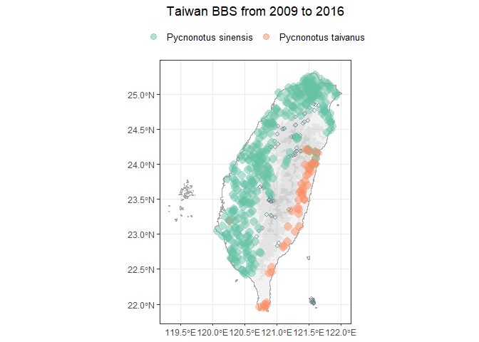

Overview 📑
The goal of bbsTaiwan is to streamline Taiwan Breeding Birds Survey (BBS) data retrieval and analysis. It will support data retrieval from GBIF, where Taiwan BBS data are stored. This work was supported by rOpenSci Champions Program 2023-2024, with the main developer Sunny Tseng and the mentor Eunseop Kim.
The first version of bbsTaiwan is using 2009 to 2016 GBIF data (version XXX) and we will updated once new dataset is published
General introduction of the functionalities
Case study with the package
Installation 💻
You can install and load the development version of bbsTaiwan from Github with:
# install.packages("devtools")
devtools::install_github("SunnyTseng/bbsTaiwan")Main functions ⛺
bbsTaiwan provides several intuitive imported datasets and data processing functions. For accessing the raw Taiwan BBS dataset on GBIF:
occurrence: times and locations at which particular species have been recordedevent: the protocols used, the sample size, and the location for eachmeasurementorfacts: additional information relating to the eventsextendedmeasurementorfact: additional information relating to the taxon occurrences
To perform basic data retrieval and visualization:
bbs_translate()translate bird species’ Chinese common name to scientific namebbs_fetch()fetch the cleaned version of Taiwan BBS cccurrence data by speciesbbs_plotmap()visualize species distribution across all BBS sitesbbs_history()examine the number of BBS sites surveyed each yearbbs_sites()return the coordinates of sll BBS sites
Usage 💡
library(bbsTaiwan)
## Get data for species of interest
bbs_fetch(c("白頭翁", "烏頭翁"))
#> # A tibble: 92,475 × 16
#> year month day site locationID decimalLatitude decimalLongitude weather
#> <dbl> <dbl> <dbl> <chr> <chr> <dbl> <dbl> <chr>
#> 1 2009 3 10 A02-01 A02-01_01 25.1 122. <NA>
#> 2 2009 3 10 A02-01 A02-01_01 25.1 122. <NA>
#> 3 2009 4 5 A02-01 A02-01_01 25.1 122. <NA>
#> 4 2009 4 26 A02-01 A02-01_01 25.1 122. <NA>
#> 5 2009 3 10 A02-01 A02-01_01 25.1 122. <NA>
#> 6 2009 4 26 A02-01 A02-01_01 25.1 122. <NA>
#> 7 2009 4 5 A02-01 A02-01_01 25.1 122. <NA>
#> 8 2009 4 26 A02-01 A02-01_02 25.1 122. <NA>
#> 9 2009 3 10 A02-01 A02-01_02 25.1 122. <NA>
#> 10 2009 4 5 A02-01 A02-01_02 25.1 122. <NA>
#> # ℹ 92,465 more rows
#> # ℹ 8 more variables: wind <chr>, habitat <chr>, scientificName <chr>,
#> # vernacularName <chr>, individualCount <dbl>, time_slot <chr>,
#> # distance <chr>, flock <chr>
## Find the distribution/overlap of two species
bbs_plotmap(c("白頭翁", "烏頭翁"))